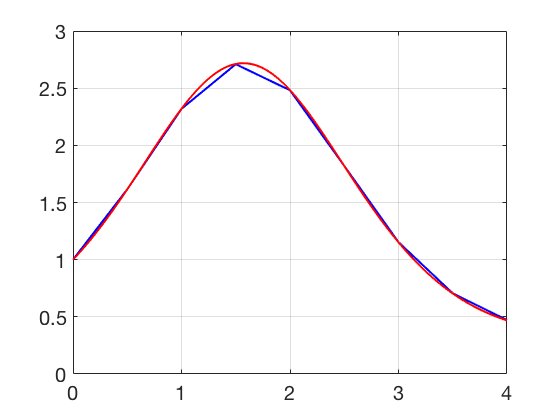

Additional Examples 6.4
1 Consider the initial value problem
\[ \left\{
\begin{array}{l}
y'=ty\\
y(0)=1.
\end{array} \right. \]
Find the approximate solution on \([0,1]\) by the Runge-Kutta Order 4 method with step size \(h = 1/4\). Report the global truncation error at \(t=1\).
The formulas for RK4 applied to \(y'=ty\) are
\begin{eqnarray*}
s_1 &=& t_iw_i\\
s_2 &=& \left(t_i+\frac{h}{2}\right)\left(w_i+\frac{h}{2}s_1\right)\\
s_3 &=& \left(t_i+\frac{h}{2}\right)\left(w_i+\frac{h}{2}s_2\right)\\
s_4 &=& \left(t_i+h\right)\left(w_i+hs_3\right)\\
w_{i+1} &=& w_i+\frac{s_1+2s_2+2s_3+s_4}{6}
\end{eqnarray*}
Using \(h=1/4\), we calculate
| \(i\) |
\(t_i\) |
\(w_i\) |
| 0 |
0.00 |
1.000000 |
| 1 |
0.25 |
1.031743 |
| 2 |
0.50 |
1.133148 |
| 3 |
0.75 |
1.324782 |
| 4 |
1.00 |
1.648710 |
The solution of the IVP is \(y(t) = e^{t^2/2},\) and \( y(1)\approx 1.648721.\) The global truncation error at \(t=1\) is \(|w_4-e^{0.5}| = 0.000011.\)
2 Show that \(y(t) = e^{\sin t}\) is a solution of the initial value problem
\[ \left\{
\begin{array}{l}
y''+y\sin t-y'\cos t =0\\
y(0)=1\\
y'(0)=1.
\end{array} \right. \]
Convert the differential equation to an equivalent first-order system, and plot the Runge-Kutta Order 4 approximate solution for step size \(h=1/2\). Compute the global truncation error \(|y(4)-w(4)|\) at \(t=4\) for the step sizes \(h=1/2, 1/4, 1/8\) and \(1/16.\)
Program 6.2 can be adapted to carry out the RK4 Method for this equation. The eulerstep function should be replaced by rk4step. The red curve is the exact solution, and the blue curve is the approximate solution with step size
\(h=1/2.\) The global truncation errors at \(t=4\) are
| h |
error |
| 1/2 |
0.0023141 |
| 1/4 |
0.0001597 |
| 1/8 |
0.0000104 |
| 1/16 |
0.0000007 |
Note the decrease in error of a factor of approximately \((1/2)^4\) for each decrease in step size of \(1/2\).
